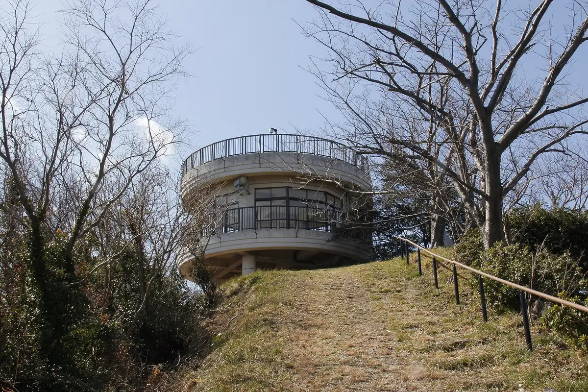
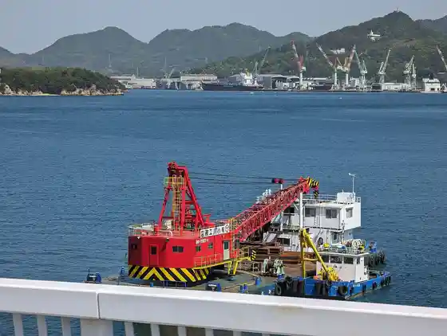

Kamijima
Kamijima · Ehime
Kamijima
Highlighted on the Ehime map.

Stay
In Land Shii Resort Fesupa
Dining
Totoya
Nyuyamazakideiriisutoa Yuge Mise
Okaerinasai
Warashibe Iwaki Shima BASE
A Kopu Yuge Mise
Tai Ya
Iwagi Bussan Center
Minshuku Yoshi Sei
Itsu Fuku
Nakaura Sengyoten
Kitchin 313 Kamiyuge
Shimade cafe
Yumeshima Kohii Baisen Tokoro Ta Suki
Misuteii Kamei
Tamura Shokuhin
vida con miel
Onsen
In Land Shii Resort Fesupa Manten Baths
Sights
Sekizen Yama Lookout
Iwaki Hashi
Yuge Bridge

Yumeshima Kaido (Sekizen Yama Yori)